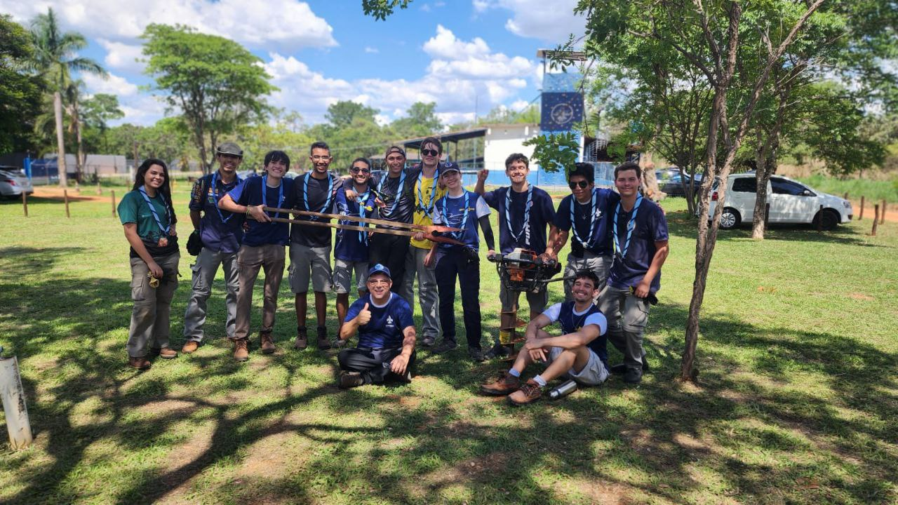
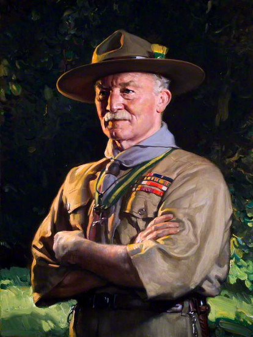

1971 – Ano Base
Estruturação da equipe, formação de chefes, instrutores e monitores, com participação em atividades regionais para adquirir experiência.
O Escotismo é um movimento educacional para jovens, com a colaboração de adultos voluntários, que desenvolve caráter, autonomia, serviço e vida em comunidade.


O Escotismo é um movimento educacional para jovens, com a colaboração de adultos, voluntários, sem vínculos políticos ou partidários, que valoriza a participação de pessoas de todas as origens sociais, raças e crenças, de acordo com o propósito, os princípios e o método escoteiro.
Seu propósito é contribuir para que jovens assumam o próprio desenvolvimento, especialmente do caráter, ajudando-os a realizar suas potencialidades físicas, intelectuais, sociais, afetivas e espirituais como cidadãos responsáveis, participantes e úteis em suas comunidades.
O movimento nasceu em 1907, idealizado por Robert Baden-Powell, e chegou ao Brasil em 1910, tornando-se uma referência na formação de jovens por meio da aventura, da vida em equipe e da educação pela ação.

O Grupo Escoteiro do Ar Salgado Filho – 9º DF foi fundado em 17/10/1971. Em seus primeiros anos, o grupo se organizou com base em um verdadeiro “plano de voo”, estruturando chefes, instrutores, monitores e vivências regionais para ganhar experiência e identidade própria.
O primeiro ano foi chamado de Ano Base, voltado à preparação da equipe e à organização interna. No segundo ano, veio o Ano Afirmação, com o foco em firmar o grupo dentro do contexto Escotismo-Aeronáutica, somando ações filantrópicas, atividades ao ar livre e a formação de uma mentalidade sadia para o futuro cidadão.
Em 1974, o grupo assumiu o Ano Consolidação, com o objetivo de voar mais alto e estruturar de forma definitiva sua sede própria, em um momento que exigia mais responsabilidade, compromisso e visão coletiva.
Estruturação da equipe, formação de chefes, instrutores e monitores, com participação em atividades regionais para adquirir experiência.
Momento de afirmação da identidade do grupo, fortalecendo a relação entre escotismo, ações filantrópicas, vida ao ar livre e formação cidadã.
Expansão da responsabilidade coletiva, amadurecimento do grupo e projeção da construção definitiva da sede própria.
O grupo cresceu em número e qualidade, formando jovens, consolidando lideranças e fortalecendo patrulhas, matilhas, chefia e diretoria.
Trechos da narrativa histórica do grupo mostram como o 9º DF foi crescendo sem perder sua identidade, seu entusiasmo e sua qualidade educativa.
A Comissão Executiva demonstrou dinamismo e apoio moral e logístico, enquanto chefes, assistentes e instrutores adestravam líderes de patrulhas e matilhas, ampliando a força educativa do grupo. O crescimento veio em número, mas também em qualidade, com mais jovens, mais dirigentes e mais progresso dentro do programa escoteiro.
Entre as realizações citadas estão a presença constante em atividades regionais, cursos de adestramento, reativação de grupo escoteiro, atividades cívicas, visitas a hospitais e orfanatos, participação nas Semanas da Asa, ARP-DF, Olimpíada Escoteira do Ar, Jamboree do Ar, eventos nacionais e internacionais, além de um vasto programa de acampamentos, esportes, montanhismo, espeleologia e aeromodelismo.
O texto resume o 9º DF como um grupo unido, alegre e sempre bem disposto, guiado pelo entusiasmo dos jovens e pela disposição permanente para realizar o melhor possível. Esse espírito aparece no slogan lembrado até hoje: “Passou, passou, passou um avião, e nele está escrito Salgado Filho é amigão”.
A história registrada também traz um convite simples e direto à comunidade: colaborar, apoiar, criticar construtivamente e caminhar junto. O encerramento assinado por Arnaldo Ribeiro, Chefe do Grupo, reforça o caráter humano e coletivo dessa construção.
Primeiro Ministro da Aeronáutica, Joaquim Pedro Salgado Filho foi escolhido por Getúlio Vargas para conduzir a Aeronáutica Brasileira em uma fase delicada da história nacional, marcada por reorganização institucional e pelas responsabilidades da II Grande Guerra.
Filho do Coronel Joaquim Pedro Salgado e de Maria José Palmeiro Salgado, nasceu em Porto Alegre em 2 de julho de 1888, formou-se em Direito em 1908 e, posteriormente, dedicou-se à vida pública e à política.
Ao longo de sua trajetória ocupou cargos de grande relevância no país, entre eles Ministro do Trabalho, Deputado Federal, Ministro do Superior Tribunal Militar, Ministro da Aeronáutica e Senador pelo Rio Grande do Sul.
Na condução do Ministério da Aeronáutica, Salgado Filho se destacou pela capacidade de reorganizar o setor aeronáutico, lidar com questões complexas de liderança e ampliar a estrutura da Força Aérea Brasileira com visão administrativa e sensibilidade humana.
Durante sua gestão, revelou-se um administrador de grande porte, capaz de encontrar soluções adequadas para os problemas da expansão do Ministério da Aeronáutica e da Força Aérea Brasileira. Demonstrou firmeza, autoridade e excepcional senso moral, sem perder a atenção aos aspectos humanos das decisões.
Foi em sua gestão que a FAB se engajou na proteção aérea à navegação costeira, foram criadas as Bases Aéreas de Recife, Natal e Salvador, instituídos postos da hierarquia militar da FAB, criadas as Zonas Aéreas e o Corpo de Oficiais com seus quadros, aprovado o Regulamento do Tráfego Aéreo, fundada a Associação dos Aeronautas e criado o 1º Grupo de Aviação de Caça.
Por seus relevantes serviços à Nação, recebeu numerosas condecorações, com destaque para honrarias de Portugal, Paraguai, Chile, Peru, Bolívia, Equador, Venezuela, Japão e da própria estrutura aeronáutica brasileira.
Salgado Filho permaneceu à frente do Ministério da Aeronáutica até 30 de outubro de 1945. Faleceu em 30 de julho de 1950, em acidente de aviação durante campanha política no Rio Grande do Sul, deixando um raro exemplo de administrador e homem público.
Os Princípios do Escotismo são definidos na Promessa Escoteira e se ajustam aos progressivos graus de maturidade do indivíduo, servindo como referência moral para a vida em grupo e para a formação pessoal.
O Método Escoteiro é um sistema de autoeducação progressiva, formado por elementos que se integram e se reforçam mutuamente.
A Lei e a Promessa formulam princípios e traduzem um compromisso livremente assumido com um estilo de vida, um código de ética e uma forma de convivência.
A educação pela ação valoriza o aprendizado pela prática, a observação, a iniciativa, a autonomia e a autoconfiança.
Os pequenos grupos aceleram a socialização, favorecem a cooperação, o protagonismo, a liderança e a disciplina voluntariamente assumida.
Os jogos, a vida ao ar livre, as técnicas, a participação comunitária, a mística e o ambiente fraterno motivam o jovem e mantêm alto seu engajamento.
O jogo e a aventura ajudam a criança e o jovem a descobrir sua identidade, compreender os demais e explorar o mundo que os cerca.
A natureza é o ambiente ideal para o escotismo: desenvolve saúde, criatividade, espírito de grupo, senso estético, responsabilidade ecológica e profundidade espiritual.
As habilidades práticas são aprendidas fazendo. Elas desenvolvem experiência pessoal, criatividade, senso vocacional e compreensão da realidade.
Aprender servindo é uma expressão concreta dos princípios do movimento, estimulando iniciativa, justiça, respeito e solidariedade.
As tradições levam à reflexão, e o ambiente fraterno encoraja a convivência. A reflexão sobre a ação é o que transforma experiência em crescimento.
O adulto educador ajuda o jovem a descobrir suas potencialidades, orientando sem controlar, em um estilo de presença que favorece o diálogo e a cooperação entre gerações.
O Movimento Escoteiro propõe o desenvolvimento equilibrado da personalidade e convida o jovem a construir sua própria identidade e seu projeto de vida.
Saúde, energia, cuidado com o corpo e vivência ativa.
Curiosidade, pensamento crítico, observação e criatividade.
Escolhas conscientes, responsabilidade e fidelidade a valores.
Autoconhecimento, empatia, equilíbrio emocional e relações saudáveis.
Vida em equipe, cooperação, serviço e participação comunitária.
Busca de sentido, reflexão, abertura ao transcendente e respeito à diversidade.
O GEAR 9º DF tem espaço para quem busca crescimento, aventura e convivência em grupo.